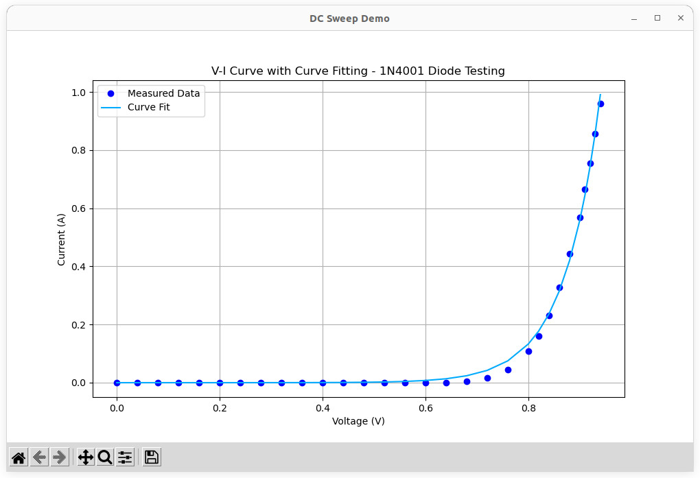
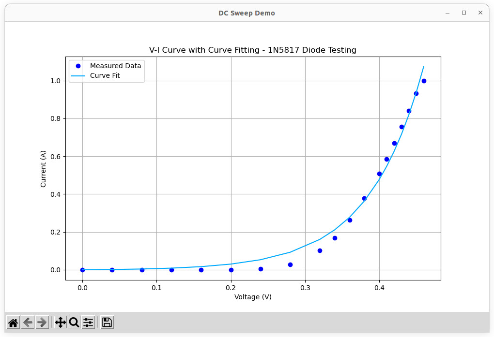
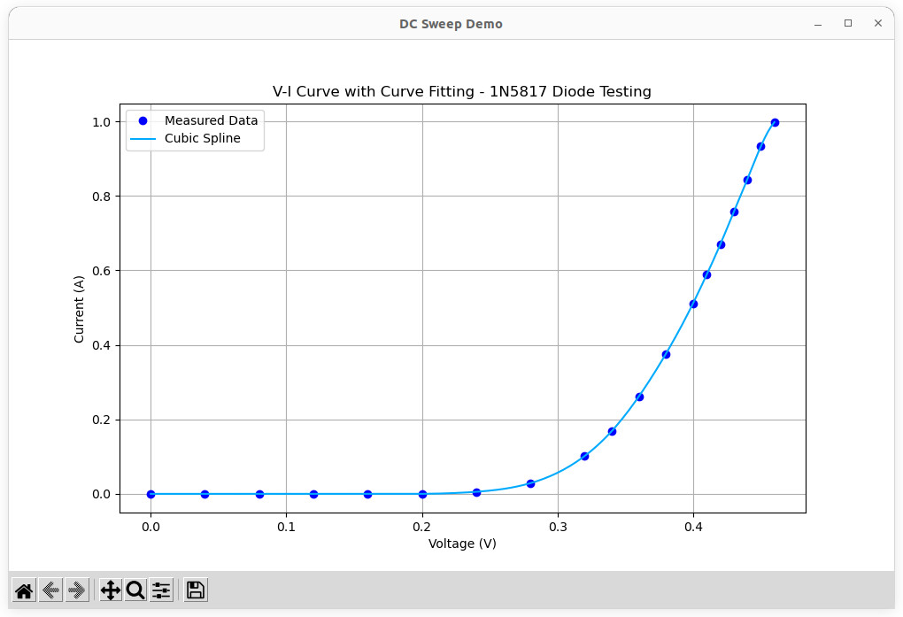

การโปรแกรม Rigol DP832 DC Supply เพื่อทดสอบไดโอด#
Keywords: Rigol DP832, Programmable DC Power Supply, Python, LXI, SCPI, Diode Testing, V-I Curve Tracing
▷ การทดสอบไดโอด#
ในการศึกษาหลักการทำงานของไดโอด (Diode) โดยอาศัยการทดสอบและวัดปริมาณทางไฟฟ้า ก็ตัวอย่าง เช่น การหาความสัมพันธ์ระหว่างแรงดันไฟฟ้าและกระแสไฟฟ้าของไดโอด (Diode V-I Curve) ซึ่งจำเป็นต้องใช้แหล่งจ่ายแรงดันไฟฟ้า DC ที่สามารถปรับค่าระดับแรงดันไฟฟ้าได้ โดยในบทความนี้จะกล่าวถึงแนวทางการใช้ Rigol DP832 DC Power Supply สำหรับทำ DC Voltage Sweeping เพื่อตรวจสอบพฤติกรรมของไดโอด และการตั้งค่าจำกัดกระแส เพื่อป้องกันความเสียหายแก่ไดโอด
หากใช้อุปกรณ์ DC Power Supply ที่โปรแกรมไม่ได้ ผู้ใช้จำเป็นต้องปรับค่าแรงดันเอาต์พุต โดยใช้มือหมุน หรือกดปุ่มค่าตัวเลขเองทีละค่า และจดค่าตัวเลขกระแสไฟฟ้าที่วัดได้ ซึ่งจะใช้เวลามากกว่า การเขียนโปรแกรมควบคุมอุปกรณ์โดยอัตโนมัติ
อุปกรณ์ที่ใช้
- Programmable DC Power Supply: Rigol DP832 / DP832A
- ไดโอดที่ต้องการทดสอบ เช่น
- 1N4148 (Standard Silicon Diode)
- 1N4001 / 1N4007 (High-Power Standard Diode)
- 1N5817 / 1N5819
- LEDs
- มัลติมิเตอร์ (สำหรับวัดปริมาณทางไฟฟ้า เปรียบเทียบกับค่าที่แสดงโดยอุปกรณ์ DC Power Supply)
- สายวัดและขั้วต่อ
▷ การทดสอบไดโอด#
แนวทางการทดสอบและการตั้งค่า Rigol DP832 มีดังนี้
- เลือกใช้ช่องเอาต์พุต เช่น CH1
- กำหนดช่วงแรงดันไฟฟ้าที่ต้องการทดสอบ ซึ่งขึ้นอยู่กับอุปกรณ์ไดโอดที่ได้เลือกมาทดสอบ และความละเอียดในการปรับเพิ่มแรงดันไฟฟ้าจากต่ำสุดไปยังสูงสุดทีละค่า
- ตั้งค่ากระแสจำกัด (Current Limit) และเปิดใช้งานโหมดป้องกันกระแสเกินสำหรับช่องเอาต์พุตที่เลือกใช้
- ไดโอดทั่วไป (Standard Diode 1N4148): ไม่ควรเกิน 100mA
- ไดโอดกำลังสูง (High-Poewr Diode 1N4007): ไม่ควรเกิน 1000mA
- ไดโอดเปล่งแสงทั่วไป (LED): ไม่ควรเกิน 20mA
- ไดโอดเปล่งแสงกำลังสูง (High-Power LED): ไม่ควรเกิน 300mA (1W LED) และ 700mA (3W LED)
- ป้อนแรงดันไฟฟ้าให้ไดโอด เป็นการป้อนแรงดันแบบไบอัสตรง (Forward Voltage) โดยต่อขั้วบวกกับขาแอโนด (A) และต่อขั้วลบกับขาคาโธด (K)
- ให้ตั้งค่าจำกัดกระแส (Current Limit) บน DP832 เพื่อป้องกันกระแสเกินพิกัด
ในแนะนำให้ศึกษาจากเอกสาร Datasheet ของผู้ผลิต เพื่อตรวจสอบช่วงแรงดันบัสอัสตรง และพิกัดกระแสของไดโอด หรือ LED
▷ การเขียนโปรแกรม Python เพื่อทดสอบไดโอด และทำขั้นตอน Curve Fitting#
การเขียนโปรแกรมด้วยภาษา Python เพื่อต่อกับอุปกรณ์ DP832 DC Supply มีสองช่องทางที่แนะนำให้เลือกใช้ ได้แก่
- USB: เชื่อมต่อผ่านพอร์ต USB และเขียนโค้ดโดยใช้ไลบรารี
pyvisaและpyvisa-py - LXI: เชื่อมต่อผ่านพอร์ต RJ45 / LXI และเขียนโค้ดโดยใช้ไลบรารี
python-vxi11
แนะนำให้ศึกษาบทความ: "การเขียนโปรแกรม Python สำหรับ Rigol DP832 Programmable DC Power Supply"
สำหรับ Ubuntu Linux ให้คำสั่งต่อไปนี้ เพื่อติดตั้งไลบรารีที่จำเป็นต้องใช้
$ sudo apt install libusb-1.0-0-dev
$ pip3 install pyvisa pyvisa-py
$ pip3 install python-vxi11
$ pip3 install numpy scipy matplotlib
ในการประมวลผลข้อมูลที่ได้จากการทดลอง มีการนำมาทำขั้นตอน Curve Fitting และวาดรูปกราฟ
โดยได้เลือกใช้ไลบรารีสำหรับ Python ได้แก่ matplotlib, numpy (v1.25.0) และ scipy (v1.15.0)
ตัวอย่างโค้ดสาธิต มีดังนี้
import vxi11
import sys
import time
import numpy as np
import matplotlib.pyplot as plt
from scipy.optimize import curve_fit
IP_ADDR = "10.42.0.182" # Set the IP address of the DP832 device
# Connect to the instrument
try:
print( f"Connecting to DP832 at {IP_ADDR}, default port 5555." )
instr = vxi11.Instrument("10.42.0.182")
except OSError as ex:
print('Device connection over LXI failed!')
sys.exit()
######################################################################
# Functions to control the instrument
def enableOutput(channel, enable):
if enable:
state = 'ON'
else:
state = 'OFF'
instr.write(f":OUTP CH{channel},{state}")
def setVoltage(channel, volt):
instr.write(f":SOUR{channel}:VOLT:LEV {volt:.3f}")
def getVoltage(channel):
return float(instr.ask(f":SOUR{channel}:VOLT?").strip())
def setCurrentLimit(channel, current):
# Clear Current Protection
instr.write(f":SOUR{channel}:CURR:PROT:CLE")
# Set Current Level for OCP
instr.write(f":SOUR{channel}:CURR:PROT:LEV {current:.3f}")
# Enable OCP
instr.write(f":SOUR{channel}:CURR:PROT:STAT ON")
state = instr.ask(f":SOUR{channel}:CURR:PROT:STAT?").strip()
current = float(instr.ask(f":SOUR{channel}:CURR:PROT:LEV?").strip())
print( f"OCP: {state}, Current Limit {current:.3f}A" )
def getCurrent(channel):
return float(instr.ask(f":MEAS:CURR? CH{channel}").strip())
def getTriggerState(channel):
return instr.ask(f":SOUR{channel}:CURR:PROT:TRIP?").strip()
def voltageSweep(channel, v_start, v_end, v_step, current_limit, delay=1.0):
setCurrentLimit( channel, current_limit ) # Set current limit for OCP
setVoltage( channel, 0.0 ) # Set output voltage to 0V
enableOutput( channel, True ) # Enable output
voltages = []
currents = []
voltage = v_start
while voltage <= v_end:
setVoltage( channel, voltage )
time.sleep( delay )
volt = getVoltage( channel )
current = getCurrent(channel)
if getTriggerState(channel) == 'YES':
print( 'OCP triggered...' )
break
voltages.append(volt)
currents.append(current)
print(f"V: {volt:.3f}V, I: {current:.3f}A")
if current >= 0.5:
v_incr = v_step/4 # quarter step
elif current >= 0.1:
v_incr = v_step/2 # half step
else:
v_incr = v_step # full step
voltage += max(v_incr,0.001)
setVoltage( channel, 0.0 ) # Set output voltage to 0V
enableOutput(channel, False) # Disable output
print("Voltage sweep complete.")
return voltages, currents
# Perform DC voltage sweep to test a diode.
print("DC sweep for diode testing...")
voltages, currents = voltageSweep( 1, 0.0, 1.0, 0.04, current_limit=1.0 )
######################################################################
# Perform curve fitting
print( "Performing curve fitting and plot the data" )
try:
diode_eq = lambda v, Is, n, kT_q=0.025: Is * (np.exp(v/(n*kT_q)) - 1)
xdata, ydata = np.array(voltages), np.array(currents)
guess_params = [1e-9, 1.8] # Initial guess: Is = 1nA, n = 1.8
popt, _ = curve_fit(diode_eq, xdata, ydata, p0=guess_params)
fit_currents = diode_eq(np.array(voltages), *popt)
print(f"Fitted parameters: Is={popt[0]:.3e}, n={popt[1]:.3f}")
except RuntimeError:
print("Curve fitting failed!")
fit_currents = currents # Use measured data
# Plot V-I curve
fig = plt.figure( figsize=(10,6) )
fig.canvas.manager.set_window_title("DC Sweep Demo")
plt.plot(voltages, currents, 'o',color='#0000ff',label='Measured Data')
plt.plot(voltages, fit_currents, '-',color='#00aaff',label='Curve Fit')
plt.xlabel("Voltage (V)")
plt.ylabel("Current (A)")
plt.title("V-I Curve with Curve Fitting - 1N4001 Diode Testing")
plt.legend()
plt.grid()
plt.savefig("plot.png", dpi=300, bbox_inches='tight')
plt.show()
ในตัวอย่างนี้ จะเห็นได้ว่า มีการนำชุดข้อมูลที่วัดได้สำหรับแรงดันไฟฟ้า (V) และกระแสไฟฟ้า (I) ของไดโอด มาผ่านขั้นตอนที่เรียกว่า Curve Fitting และสร้างเส้นโค้งที่เหมาะสมที่สุด เพื่ออธิบายความสัมพันธ์ระหว่าง V กับ I
ในการทำ Curve Fitting จะต้องมีการกำหนดรูปแบบของฟังก์ชัน อาจเป็น สมการเส้นตรง ฟังก์ชันเอกซ์โปเนนเชียล หรืออื่น ๆ ในโค้ดตัวอย่างได้มีการใช้ฟังก์ชัน curve_fit() ของไลบรารี scipy.optimize และมีการกำหนดรูปแบบของสมการสำหรับไดโอด
(diode_eq) จากรูปกราฟ จะเห็นได้ว่า เส้นโค้งที่ได้ ไม่จำเป็นต้องวิ่งผ่านจุดข้อมูลจากการทดลอง

รูป: ตัวอย่างรูปกราฟที่ได้จากการทดสอบไดโอด 1N4001

รูป: ตัวอย่างรูปกราฟที่ได้จากการทดสอบไดโอด 1N5817
จากรูปกราฟจะเห็นได้ว่า ไดโอด 1N4001 มีค่า Forward Voltage (VF) ประมาณ 0.9V @1A ในขณะที่ 1N5817 มีค่าต่ำกว่า อยู่ที่ประมาณ 0.47V @1A
▷ การเขียนโปรแกรม Python เพื่อทดสอบไดโอด และทำขั้นตอน Cubic Spine Interpolation#
อีกตัวอย่างหนึ่งคือการสาธิตการทดลอง DC Voltage Sweep โดยกำหนดค่าแรงดันไฟฟ้าในช่วงที่ต้องการ และวัดค่ากระแสไฟฟ้าของไดโอดที่ได้ ข้อมูลที่ได้จากการทดลองจะถูกนำไปผ่านกระบวนการที่เรียกว่า Cubic Spline Interpolation ซึ่งแตกต่างจาก Curve Fitting
Interpolation เป็นการประมาณค่าวิธีหนึ่ง ใช้สร้างเส้นโค้งที่ราบเรียบ เพื่อให้ผ่านจุดข้อมูลที่กำหนดไว้ทั้งหมด คำว่า "Spline" หมายถึง การแบ่งช่วงย่อย ๆ แล้วหาฟังก์ชันสำหรับแต่ละช่วง ที่เป็นฟังก์ชันแบบพหุนาม (Polynomial Function) ในกรณีของ Cubic Spline Interpolation แต่ละช่วงจะใช้ฟังก์ชันพหุนามที่มีเลขชี้กำลังสูงสุดเป็น 3 (Cubic Polynomial) ผลลัพธ์ที่ได้คือ การหาสมการที่สามารถสร้างเส้นโค้งราบเรียบที่ผ่านจุดข้อมูลทั้งหมด โดยยังคงความต่อเนื่องของเส้นโค้ง รวมถึงความต่อเนื่องของอนุพันธ์ลำดับที่หนึ่ง (Slope) เพื่อให้เส้นโค้งที่ได้ดูเป็นธรรมชาติและไม่มีรอยหักหรือจุดไม่ต่อเนื่อง
import vxi11
import sys
import time
import numpy as np
import matplotlib.pyplot as plt
from scipy.interpolate import CubicSpline
IP_ADDR = "10.42.0.182" # Set the IP address of the DP832 device
# Connect to the instrument
try:
print( f"Connecting to DP832 at {IP_ADDR}, default port 5555." )
instr = vxi11.Instrument("10.42.0.182")
except OSError as ex:
print('Device connection over LXI failed!')
sys.exit()
######################################################################
# Functions to control the instrument
def enableOutput(channel, enable):
if enable:
state = 'ON'
else:
state = 'OFF'
instr.write(f":OUTP CH{channel},{state}")
def setVoltage(channel, volt):
instr.write(f":SOUR{channel}:VOLT:LEV {volt:.3f}")
def getVoltage(channel):
return float(instr.ask(f":SOUR{channel}:VOLT?").strip())
def setCurrentLimit(channel, current):
# Clear Current Protection
instr.write(f":SOUR{channel}:CURR:PROT:CLE")
# Set Current Level for OCP
instr.write(f":SOUR{channel}:CURR:PROT:LEV {current:.3f}")
# Enable OCP
instr.write(f":SOUR{channel}:CURR:PROT:STAT ON")
state = instr.ask(f":SOUR{channel}:CURR:PROT:STAT?").strip()
current = float(instr.ask(f":SOUR{channel}:CURR:PROT:LEV?").strip())
print( f"OCP: {state}, Current Limit {current:.3f}A" )
def getCurrent(channel):
return float(instr.ask(f":MEAS:CURR? CH{channel}").strip())
def getTriggerState(channel):
return instr.ask(f":SOUR{channel}:CURR:PROT:TRIP?").strip()
def voltageSweep(channel, v_start, v_end, v_step, current_limit, delay=1.0):
setCurrentLimit( channel, current_limit ) # Set current limit for OCP
setVoltage( channel, 0.0 ) # Set output voltage to 0V
enableOutput( channel, True ) # Enable output
voltages = []
currents = []
voltage = v_start
while voltage <= v_end:
setVoltage( channel, voltage )
time.sleep( delay )
volt = getVoltage( channel )
current = getCurrent(channel)
if getTriggerState(channel) == 'YES':
print( 'OCP triggered...' )
break
voltages.append(volt)
currents.append(current)
print(f"V: {volt:.3f}V, I: {current:.3f}A")
if current >= 0.5:
v_incr = v_step/4 # quarter step
elif current >= 0.1:
v_incr = v_step/2 # half step
else:
v_incr = v_step # full step
voltage += max(v_incr,0.001)
setVoltage( channel, 0.0 ) # Set output voltage to 0V
enableOutput(channel, False) # Disable output
print("Voltage sweep complete.")
return voltages, currents
# Perform DC voltage sweep to test a diode.
print("DC sweep for diode testing...")
voltages, currents = voltageSweep( 1, 0.0, 1.0, 0.04, current_limit=1.0 )
######################################################################
# Perform Cubic Spline interpolation
print( "Performing curve fitting and plot the data" )
try:
# Perform cubic spline interpolation
cs = CubicSpline(voltages, currents)
# Generate more points for the fitted curve
npoints = 10*len(voltages)
fit_voltages = np.linspace(min(voltages), max(voltages), npoints)
fit_currents = cs(fit_voltages)
except RuntimeError:
print("Curve fitting failed!")
fit_currents = currents # Use measured data
# Plot V-I curve
fig = plt.figure( figsize=(10,6) )
fig.canvas.manager.set_window_title("DC Sweep Demo")
# Plot the measured data and fitted spline curve
plt.plot(voltages, currents, 'o',color='#0000ff',label="Measured Data")
plt.plot(fit_voltages, fit_currents, '-',color='#00aaff',label="Cubic Spline")
plt.xlabel("Voltage (V)")
plt.ylabel("Current (A)")
plt.title("V-I Curve with Curve Fitting - 1N5817 Diode Testing")
plt.legend()
plt.grid()
plt.savefig("plot.png", dpi=300, bbox_inches='tight')
plt.show()

รูป: ตัวอย่างรูปกราฟที่ได้จากการทดสอบไดโอด 1N5817
จากรูปกราฟ จะเห็นได้ว่า ไดโอด 1N5817 เริ่มมีกระแสไหล เมื่อมีแรงดันบัสอัสตรงประมาณ 0.25V และประมาณ 0.47V @1A
▷ กล่าวสรุป#
บทความนี้ได้นำเสนอแนวทางการทดสอบไดโอด โดยใช้การเขียนโปรแกรมภาษา Python สำหรับ DC Power Supply โดยเลือกใช้ Rigol DP832 และนำข้อมูลที่วัดได้มาแสดงรูปกราฟ ด้วยวิธี Curve Fitting และ Cubic Spline Interpolation
This work is licensed under a Creative Commons Attribution-ShareAlike 4.0 International License.
Created: 2025-03-29 | Last Updated: 2025-03-29